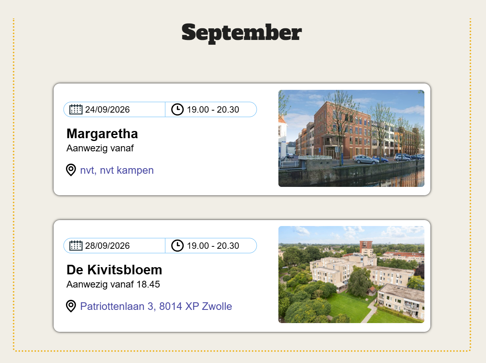
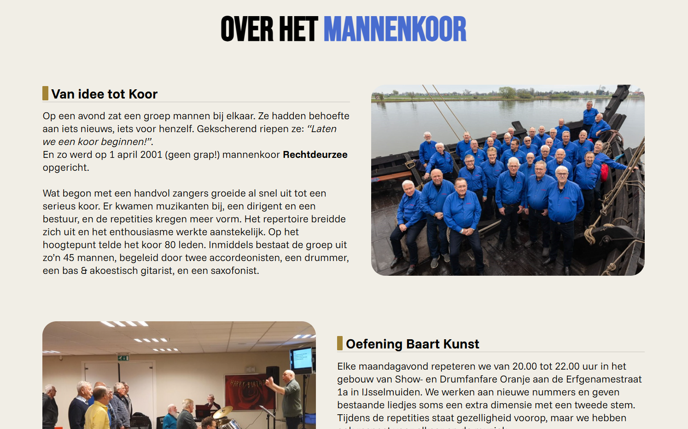
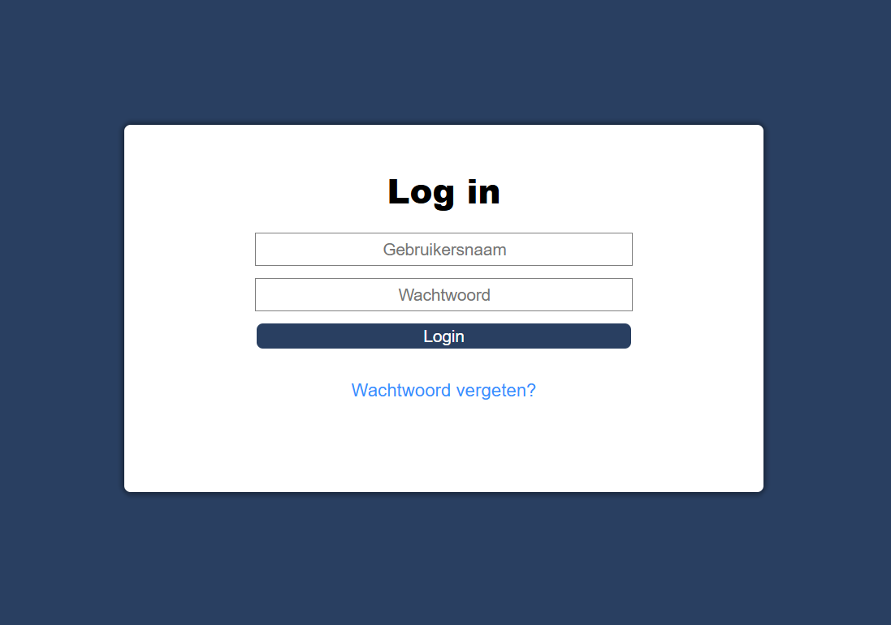
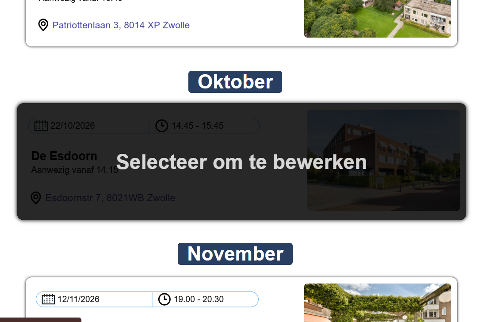
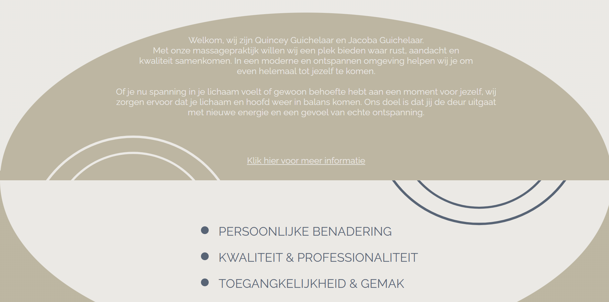
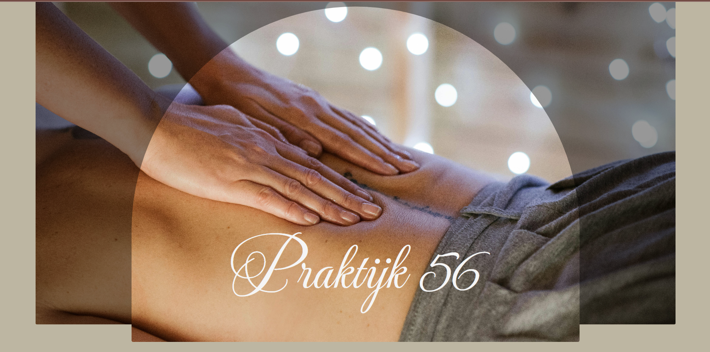
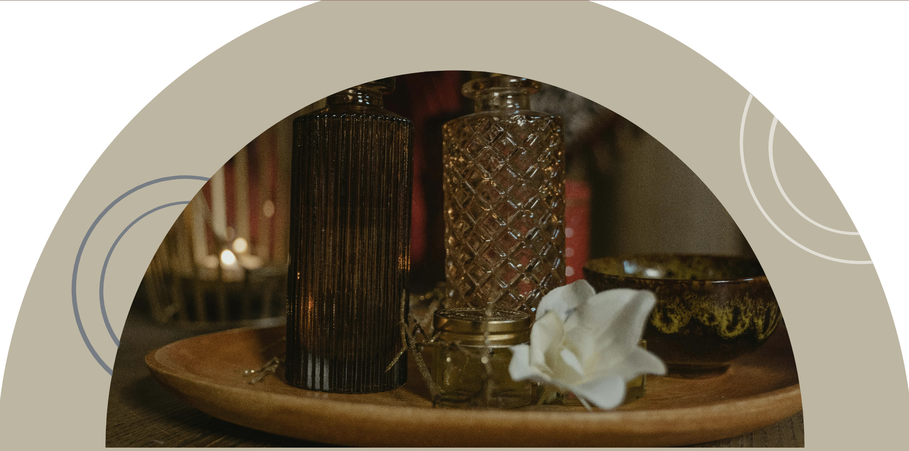
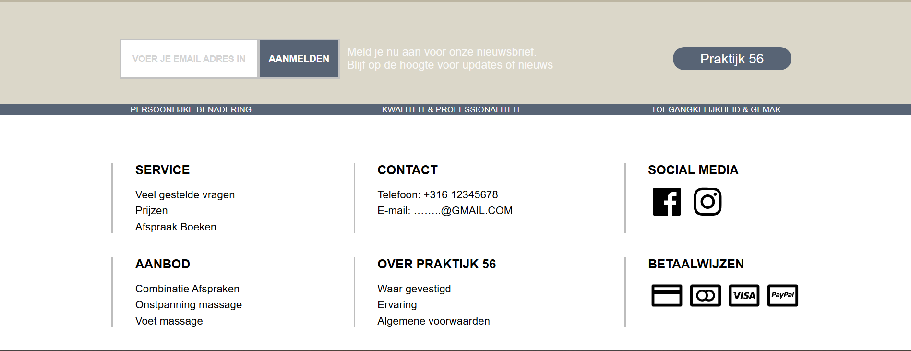

Leuk dat je hier bent! Mijn naam is Peter, ik ben momenteel 29 jaar oud en ik woon in Kampen. Hieronder vind je meer informatie over waar ik me graag mee bezig houd.
Mijn vrije tijd spendeer ik graag buiten de deur. Mountainbiken, wandelen/hiken, hardlopen, hengeltje uitgooien, noem het maar op. Zelfs mijn vakanties zijn merendeels gefocust op het doen van activeiten in de natuur. Hoe meer ik buiten kan doen, des te beter!
Als kind zijnde was ik al druk bezig met computers. Ik kan uren bezig zijn met het ontdekken van nieuwe technieken of het oplossen van een technisch probleem. Nieuwe technieken ontdekken of problemen niet kunnen oplossen, is brandstof voor mijn nieuwsgierigheid & doorzettingsvermogen. Dit resulteert regelmatig in slaap te kort!
De eerste keer voor jezelf koken, dat ging vast niet iedereen goed af. Voor mij ook zeker niet, maar het resulteede wel in een nieuwe hobby. Regelmatig sta ik in de keuken om nieuwe recepten uit te proberen of om te koken voor vrienden en/of familie.
'Heb je deze al gezien?' Is een vraag die ik vaker zal stellen dan goed is voor wie dan ook. Als het op film of serie kijken aankomt, ben ik echt een Fanatiekeling. Ik ben altijd opzoek naar nieuwe films & series om te kijken!
Hieronder vind je de projecten waar in gewerkt heb. Alle projecten zijn te vinden op GitHub. Gebruik de knop rechtsonder in het projectitem voor een uitgebreide toelichting over het project.
Rechtdeurzee is een mannenkoor dat bestaat uit een groep van ongeveer 50 mannen. Mijn eigen Opa is onderdeel van dit Mannenkoor. Hij beheerde de oude website van het mannenkoor, maar deze website liet veel te wensen over.
Toen ik genoeg begreep van HTML, CSS, JavaScript & wat basis ontwerp begrippen, ben ik begonnen met het herbouwen van de website. De focus lag vooral op duidelijke home pagina met & een overzichtelijke pagina voor de aankomende evenementen. Het Koor wil graag dat de bezoeker een beter beeld heeft bij wie het koor is, en wanneer en waar ze het koor kunnen zien.
Initieel zou de website alleen een front-end nodig hebben. Omdat het koor graag hun eigen agenda op de website wil beheren, is er ook een backend ontwikkeld. De website heeft nu ook een admin portaal waar nieuwe evenementen kunnen worden aangemaakt, aanpassen of verwijderen van bestaande evenementen.




De front-end is gebouwd met HTML, CSS & JavaScript. Het ontwerp van de website is bijna volledig door mijzelf gedaan. De golfvormige achtergrond voor de muzikanten is gemaakt met een CSS shape generator. De carousel met alle sponsoren is ook niet volledig mijn eigen code. Dit heb ik overgenomen van een how-to artikel. Ook is de website doormiddel van media queries aangepast voor verschillende scherm maten.
Zoals hierboven al benoemd, heeft de Rechtdeuzee website ook een backend. Dit maakt het een fullstack Project. De backend is gebouwd met NodeJS & Express als framework voor de routering. Als database heb ik MongoDB gebruikt In combinatie met Mongoose voor het modelleren van de data voordat deze in de database opgeslagen wordt. In dit project maak ik gebruik van EJS als templating engine. Bijvoorbeeld, de agenda pagina met de opkomende evenemten, wordt dynamisch gegenereerd met EJS.
Praktijk 56 is een opstartend massagepraktijk. De eigenaresse gaat binnenkort haar praktijk openen. Ze wil graag een website met een rustig & moderne uitstraling, en het belangrijkste, de website moet een boekingsysteem bevatten.
Het ontwerp is gedaan door een grafisch-ontwerper in opleiding. Nadat het ontwerp was aangeleverd, heb ik met CSS het ontwerp zo identiek mogelijk nagebouwd. Hier zaten een aantal leuke uitdagingen in, zoals de 'hero'sectie op de home pagina. Het meest uitdagend was de Arc's/bogen halverwege de home & Over Ons pagina.
Zoals aangegeven, zal deze website een boekingsysteem bevatten. In het boekingsproces kan de klant de behandeling selecteren en op basis van de behandeling, de beschikbare tijden en datums zien. Wanneer de boeking gemaakt is, zal er een email verstuurt worden naar de eigenaresse met een agenda uitnodiging corresponderent met de gemaakte afspraak. Zo kan zij de boekingen bijhouden via haar eigen agenda. Een boekingsbevestiging zal verstuurd worden naar de klant. Betalingen worden ter plaatse gedaan. Eventueel wordt dit op een later moment geïntegreerd.
Ook wordt er een functie gebouwd worden voor klanten omzich aan te melden voor een nieuwsbrief.




Op dit moment is er alleen een front-end voor dit Project. Zelfs voor de front-end moet er nog het één en ander gebeuren. Zover is er alleen HTML, CSS & wat JavaScript gebruikt. Het is de bedoeling dat voor dit Project een backend komt, met vooral de focus op het boekingssysteem. Hoe dit er exact gaat uit zien wordt momenteel uitgewerkt, maar de verwachting is om Express te gebruiken voor de routering, Google's Calendar API voor de afspraken, een MongoDB of SQL database & EJS als templating engine.